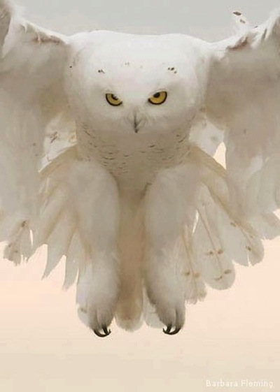

We give a hoot about owls!
Snowy owls live in many areas of the world. They are birds of prey. Give a lot of info about snowy owls.
Information about owls in Ancient times.
Info about us
Of all of the horrid, hideous notes of woe, Sadder than owl-songs or the midnight blast, Is that portentous phrase, 'I told you so.'
Sign up to receive emails about our newest knowledge.